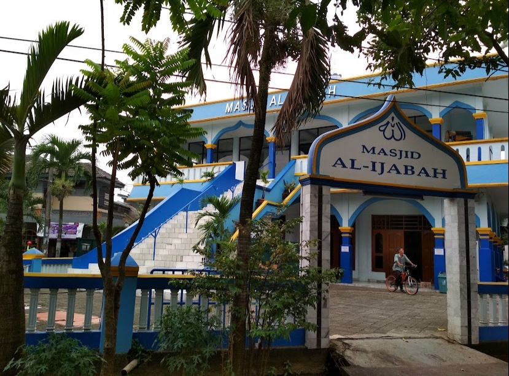
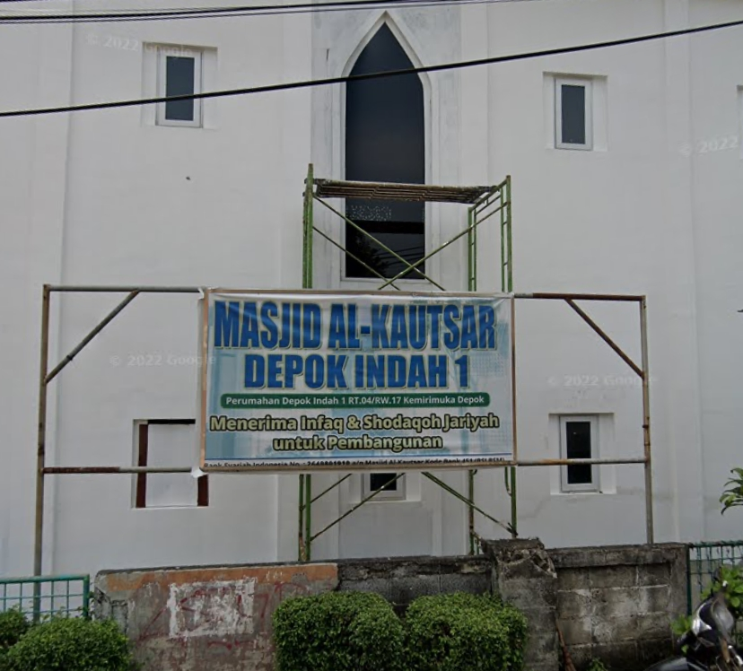
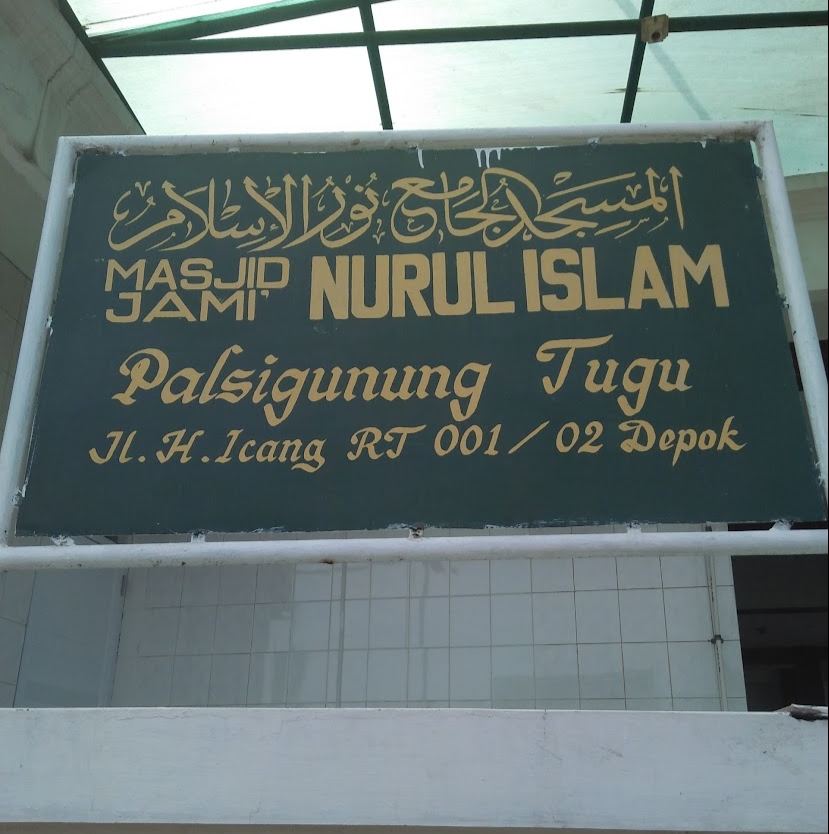
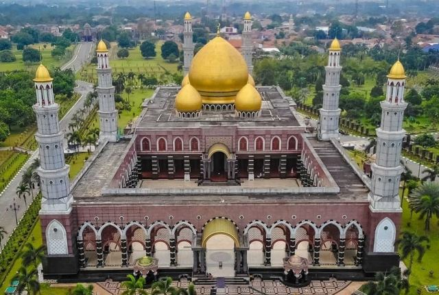

Masjid Darussalam adalah masjid yang dibangun di kawasan perumahan
Puri Bukit Depok. Masjid yang peletakan batu pertama dilakukan
pada bulan 24 November 2019 oleh Bapak ketua RW 010 dan disaksikan
oleh panitia pembangunan dan warga blok MNP. Sejak itulah
pembangunan masjid mulai berjalan dengan bantuan pihak donatur
dari lembaga Dakwah Al-Islamiyah Raskasbitung Banten, dan
sumbangsih dari seluruh warga Blok MNP khususnya dan warga Puri
Bukit Depok pada umumnya.

Masjid Al Ijabah
Masjid Al Ijabah juga menjadi tujuan warga sekitar untuk
menunaikan ibadah sunnah dan wajid dibulan Ramadhan seperti buka
puasa bersama, sholat tarawih dan lainnya. Masjid di Kota Depok
ini juga dapat menyalurkan sumbangan, sedekah, kurban dan zakat
warga Kota Depok.

Masjid Al Kautsar
Masjid AL-KAUTSAR yang dibangun pada tahun 2012. Masjid AL-KAUTSAR
merupakan kategori Masjid Umum. Masjid AL-KAUTSAR beralamat di
Griya Panmas Indah Rw.14 Jl. Keadilan Kel.Rangkapan Jaya Baru
Kec.Pancoranmas Depok Jawa Barat. Masjid AL-KAUTSAR memiliki luas
tanah 200 m2, luas bangunan 250 m2 dengan status tanah Wakaf.
Masjid AL-KAUTSAR memiliki jumlah jamaah 150 - 200 orang, jumlah
muazin 15 orang, jumlah remaja 40 orang dan Jumlah Khotib 10 orang

Mesjid Jami Nurul Islam
Masjid Nurul Islam yang dibangun pada tahun 1978. Masjid Nurul
Islam merupakan kategori Masjid Umum. Masjid Nurul Islam beralamat
di JL. Mangga Raya No. 106 A, RW. 02 Kel. Depok Jaya Depok Jawa
Barat. Masjid Nurul Islam memiliki luas tanah 1.000 m2, luas
bangunan 800 m2 dengan status tanah Girik. Masjid Nurul Islam
memiliki jumlah jamaah > 200 orang , jumlah muazin 52 orang,
jumlah remaja 70 orang dan Jumlah Khotib 5 orang.

Masjid Kubah Emas
Nama masjid ini sebenarnya bernama Masjid Dian Al Mahri (nama yang
diberikan oleh sang pemilik yaitu Ibu Dian Al Mahri), namun
kebanyakan orang-orang menyebutnya dengan Masjid Kubah Emas,
karena memang bagian yang paling mencolok dari seluruh bangunannya
ini adalah pada bagian kubahnya yang berwarna ke-emasan karena
memang kubahnya tersebut berlapiskan emas.